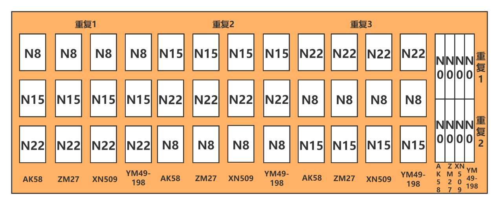
31 Application of UAV in Wheat Growth Monitoring
31.1 Introduction
Leaf Area Index (LAI) is defined as the total leaf area of crop foliage per unit of land surface. It is a key parameter that governs photosynthesis, respiration, and transpiration processes within the vegetation canopy. As one of China’s most important grain crops, winter wheat requires timely, accurate, and efficient monitoring of LAI for assessing crop growth, guiding irrigation and fertilization, and supporting yield forecasting. Traditionally, LAI measurements for winter wheat have relied on destructive sampling methods—harvesting plant specimens and manually calculating leaf area. While these methods yield accurate results, they are time-consuming, labor-intensive, and costly, making them unsuitable for large-scale, real-time agricultural applications. Remote sensing has emerged as a powerful, non-destructive technique for monitoring crop growth parameters. In particular, low-altitude remote sensing using Unmanned Aerial Vehicles (UAVs) has developed rapidly in recent years. UAV-based sensing systems offer high spatial resolution, rapid data acquisition, low cost, and flexible deployment without requiring airspace approvals. These advantages help bridge the limitations of both ground-based observations and satellite remote sensing in multi-scale, dynamic monitoring of crop growth, and have enabled broad applications in various aspects of precision agriculture.
31.2 Experimental Area and Data
The experiment was conducted during the 2017-2018 growing season at the Regional Experimental Station in Xindian Town, Yancheng District, Luohe City, Henan Province, China (113°53′1″E, 33°41′60″N). The experimental study area is shown in Figure 1. The soil in the study area contained 13.33 g/kg of organic matter, 1.02 g/kg of total nitrogen, 92.33 g/kg of alkali-hydrolyzable nitrogen, 54.02 mg/kg of available phosphorus, and 299 mg/kg of available potassium. Four winter wheat varieties were tested: Zhoumai 27 (ZM27), Yumai 49-198 (YM49-198), Xinong 509 (XN509), and Aikang 58 (AK58). Four nitrogen application levels were set: 0, 120, 225, and 330 kg/hm², denoted as N0, N8, N15, and N22, respectively. The experiment followed a split-plot design with three replications, comprising 44 plots in total. Each plot measured 144m² (16 m×9 m). Nitrogen fertilizer was applied in a 6:4 ratio between the base and topdressing stages. The base fertilizer was applied before sowing, and the topdressing was applied at the jointing stage. Sowing was conducted by machine on October 23, 2017, with a seeding rate of 180 kg/hm². All other cultivation and field management practices followed those typical of high-yielding wheat fields. The layout of the experimental design is illustrated in Figure 31.1.
Experimental data were collected at three critical growth stages of winter wheat in 2018, namely, the jointing stage (March 11), the booting stage (April 8), and the grain-filling stage (May 12). During each stage, UAV-based hyperspectral imagery, ground-based hyperspectral data, and LAI measurements were acquired simultaneously.
The UAV remote sensing platform consisted of an AZUP-T8 octocopter produced by Zero UAV (China), equipped with a UHD185 hyperspectral imaging sensor developed by Cubert GmbH (Germany). The sensor covered a spectral range of 450-950 nm, with 125 spectral bands, a spectral sampling interval of 4 nm, and a spectral resolution of 8 nm. Data acquisition was conducted under clear, cloud-free conditions with low wind speed. Prior to each flight, the UHD185 sensor was radiometrically calibrated using a reference panel. The UAV was flown at a speed of 6 m/s and an altitude of 50 meters, with 80% forward overlap and 60% side overlap between flight lines.
Ground hyperspectral data were collected using an ASD FieldSpec 4 portable spectrometer prior to UAV flights. The spectral range of the ASD device was 350-2500 nm, with a sampling interval of 1.4 nm for 350-1000 nm and 2 nm for 1000-2500 nm, and a spectral resolution of 3 nm and 2 nm, respectively. The field of view was 25 degrees. During data acquisition, the probe was maintained at a vertical distance of approximately 1 meter above the crop canopy. For each plot, three representative locations with uniform growth were randomly selected. At each location, ten spectral measurements were taken and averaged as the spectral reflectance of the winter wheat canopy. Standard white panel calibration was performed before and after each measurement. The geographic coordinates (latitude and longitude) of each sampling point were recorded using a handheld differential GPS device.
LAI samples were collected at the same locations as the ground spectral measurements, where 10 representative samples were taken from each location and immediately brought back to the laboratory in sealed bags for stem and leaf separation.
31.3 Methods
A total of 132 samples were collected during the experiment. After removing 8 samples due to experimental errors, 124 samples were retained for integrated data analysis. Among them, replicates 1 and 3 were used as the modeling dataset (80 samples), while replicate 2 was served as the validation dataset (44 samples). The statistical characteristics of LAI in each dataset are presented in Table 31.1.
| Sample type | Sample Number | Maximum Value | Minimum Value | Mean Value | Standard Deviation | Coefficient of Variation |
|---|---|---|---|---|---|---|
| Total Sample | 124 | 8.38 | 1.78 | 5.43 | 1.70 | 0.32 |
| Calibration set | 80 | 8.38 | 1.78 | 5.33 | 1.74 | 0.33 |
| Validation set | 1.78 | 8.24 | 3.10 | 5.62 | 1.62 | 0.30 |
Based on the above data, the feature band extraction was carried out using the following methods: first-order differentiation (FD), successive projection algorithm (SPA), competitive adaptive reweighted sampling (CARS), and competitive adaptive reweighting algorithm combined with successive projection algorithm (CARS_SPA). Using both the selected feature bands and the full spectral range, three machine learning algorithms were employed to construct LAI prediction models: Partial Least Squares Regression (PLSR), Support Vector Machine Regression (SVR), and Extreme Gradient Boosting (XGBoost). The UAV data processing and analysis workflow is shown in Figure 31.2.
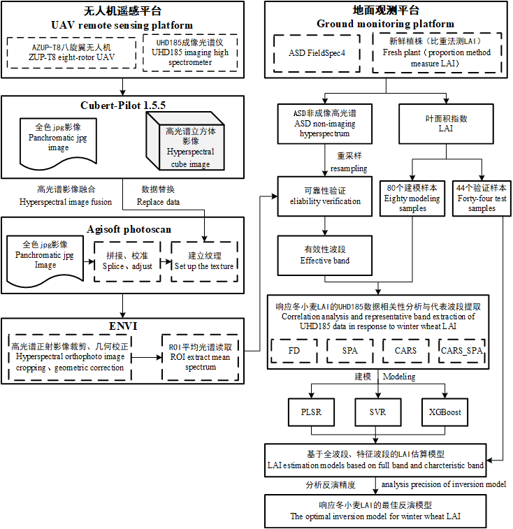
31.3.1 Spectral Signature Extraction Algorithms
First-order differentiation (FD) is a first-order derivative transformation applied to hyperspectral data to effectively eliminate background noise caused by linear or near-linear spectral trends. This enhances spectral contrast and improves the differentiation of spectral features.
Successive Projection Algorithm (SPA) selects a subset of wavelengths from the spectral matrix with minimal redundant information, thereby minimizing multicollinearity among variables. This substantially reduces the number of input variables required for modeling, simplifies the model structure, and improves both the stability and accuracy of the prediction model.
Competitive Adaptive Reweighted Sampling (CARS) is a novel variable selection algorithm based on the principle of “survival of the fittest.” It iteratively eliminates variables with lower absolute regression coefficient weights in the PLSR model by using an Exponential Decay Function (EDF) and Adaptive Reweighted Sampling (ARS) technique. Through cross-validation, the optimal subset of variables is identified by selecting the subset with the lowest Root Mean Square Error of Cross-Validation (RMSECV) among the N repeated selections.
The Combined CARS and SPA Method (CARS_SPA) integrates the strengths of both the CARS and SPA algorithms. By combining their complementary advantages, it maximizes the reduction of spectral redundancy while also minimizing the interference of irrelevant bands in the SPA computation process.
31.3.2 Machine Learning Algorithms
Partial Least Squares Regression (PLSR) is a multivariate regression method that models multiple dependent variables against multiple independent variables. It integrates the advantages of Principal Component Analysis (PCA), Canonical Correlation Analysis (CCA), and Multiple Linear Regression (MLR), which can effectively address multicollinearity among predictors and is particularly suitable for modeling with small sample sizes.
Support Vector Machine Regression (SVR) is a regression algorithm derived from Support Vector Machines (SVM) that uses Lagrange multipliers to construct the regression function. It is particularly effective for small sample learning and handles nonlinear problems by transforming them into linear problems in a higher-dimensional space through kernel functions. Gaussian kernel function (RBF kernel function) is used as the kernel function in this study. The GridSerachCV function is used to find the optimal parameters: penalty coefficients cost and gamma.
Extreme Gradient Boosting (XGBoost), proposed by Tianqi Chen [1], is an efficient and scalable ensemble learning algorithm that improves upon traditional Gradient Boosting methods. It applies a second-order Taylor expansion of the objective function to enhance optimization flexibility and applicability, thus enabling the use of custom loss functions. XGBoost also incorporates strategies similar to those used in Random Forests, supports data sampling, and leverages multi-core CPU parallelism to significantly boost computational efficiency and predictive accuracy. The main hyperparameters optimized in the XGBoost model include: n_estimators (number of boosting rounds), max_depth (maximum tree depth), min_child_weight (minimum sum of instance weight in a child node), gamma (minimum loss reduction required to make a further partition), subsample and colsample_bytree (sampling ratios for rows and features), and learning_rate (shrinkage factor for step size).
31.3.3 Model Evaluation Metrics
To assess the reliability of the winter wheat LAI estimation models, three commonly used statistical indicators were selected: the coefficient of determination (R²), root mean square error (RMSE), and mean absolute error (MAE). R² measures the goodness of fit; a value closer to 1 indicates a stronger correlation between the measured and predicted values. RMSE evaluates the average magnitude of prediction errors. A smaller RMSE indicates higher predictive accuracy. MAE calculates the average of the absolute errors, providing an intuitive measure of the actual prediction deviation.
31.4 Results
To verify the reliability of hyperspectral data acquired by the UAV-mounted UHD185 sensor, canopy spectra of winter wheat collected by the ASD FieldSpec spectrometer were first resampled to match the spectral bands of the UHD185. The average reflectance of the resampled data was then calculated for comparison.
Overall, the spectral trends obtained from the UHD185 and ASD sensors showed a high degree of consistency in the 458-830 nm range. Notably, both exhibited similar characteristics in the green peak region and red-edge region. In the 830-950 nm range, the reflectance captured by the UHD185 gradually declined, showing a downward trend, while the ASD spectra remained relatively stable. This discrepancy is due to the fact that the 830-950 nm range lies near the edge of the UHD185 sensor’s detection range, where signal noise tends to be higher (see Figure 31.3).
Furthermore, a correlation analysis was conducted between the UHD185 data and the resampled ASD spectra within the 458-830 nm range. The results showed a strong correlation, with the coefficient of determination (R²) exceeding 0.99, as shown in Figure 31.3.
These findings indicate that the UHD185 hyperspectral data in the 458-830 nm range (corresponding to bands 3-96) are reliable and suitable for use in the estimation of winter wheat LAI.
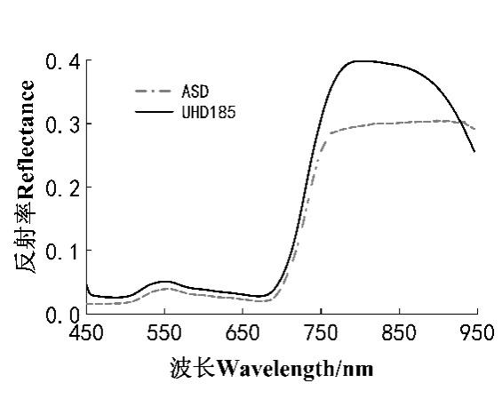
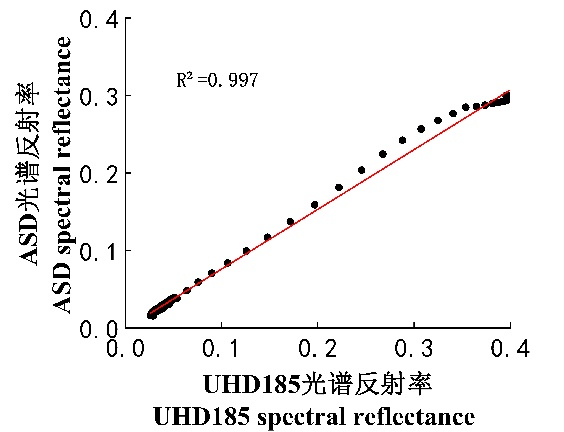
Correlation analysis was conducted between the measured LAI of winter wheat and both the original canopy spectral reflectance and the FD spectra within the 458-830 nm wavelength range. The variation curves of the correlation coefficients are shown in Figure 31.4.
As shown in the figure, in the analysis using the original spectral data, the maximum negative correlation between LAI and reflectance occurred at 654 nm with a coefficient of R = -0.80, while the maximum positive correlation was observed at 802 nm with R = 0.49. For the FD spectra, the correlation coefficients exhibited larger fluctuations. In this case, the maximum negative correlation was observed at 546 nm (R = -0.74), and the maximum positive correlation occurred at 774 nm (R = 0.83). Wavelength regions with a correlation coefficient absolute value greater than 0.6 included: 498-506, 542, 546, 738-786, and 830 nm.
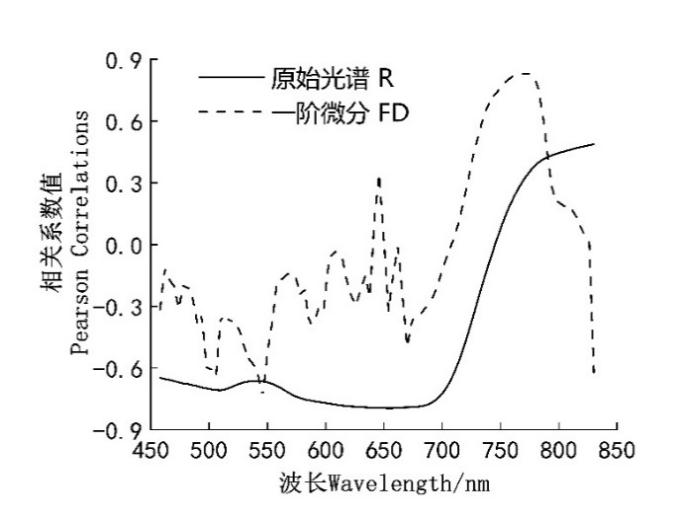
Four methods—FD, SPA, CARS, and the combined CARS_SPA—were employed to select hyperspectral bands relevant to the LAI of winter wheat. From the correlation curve between LAI and the first-order derivative spectral reflectance (Figure 31.4), feature bands were selected based on local maxima at inflection points. To avoid selecting multiple highly correlated bands within narrow spectral intervals, only the most prominent bands were retained. A total of four feature bands were selected using the FD method, all with correlation coefficients greater than 0.6, accounting for 4.25% of the total number of bands. These selected bands were 506, 546, 774, and 830 nm.
Figure 31.5 shows the variable selection process using the SPA algorithm. During SPA execution, the minimum number of selected bands was set to 5, and the maximum to 94. As shown in Figure 31.5, the minimum RMSE of 1.049 was obtained when the number of variables reached the optimal band count. Figure 31.5 also displays the 28 optimal feature bands selected by SPA, accounting for 29.8% of all spectral variables. These bands were: 458, 466, 474, 482, 498, 502, 506, 510, 518, 526, 530, 534, 542, 546, 558, 566, 570, 574, 610, 626, 650, 658, 686, 698, 710, 762, 814, and 830 nm.
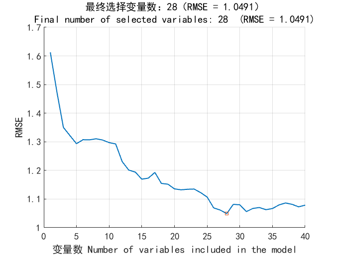
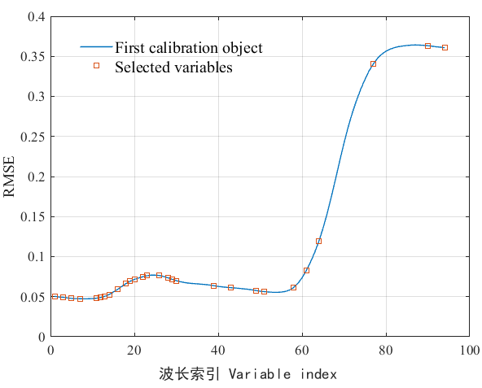
Figure 31.6 illustrates the feature band selection process using the CARS (Competitive Adaptive Reweighted Sampling) method. As shown in the top part (a), with the increase in CARS iterations, the number of retained wavelengths gradually decreases, and the rate of reduction slows down over time. The middle part (b) of Figure 31.6 presents the trend of RMSECV as the number of sampling iterations increases. Initially, RMSECV decreases slightly and remains relatively stable; however, after 47 iterations, RMSECV begins to increase sharply, indicating that some important spectral information was eliminated, leading to a decline in model performance.
The bottom part (c) of Figure 31.6 displays the variable stability plot, where each curve represents the selection frequency trend of a specific variable across iterations. The iteration at which RMSECV reached its minimum value (0.9674) occurred at 24 iterations, as indicated by a red asterisk in the figure. At this point, a total of 13 feature bands were selected, accounting for 13.8% of the total number of spectral bands. These selected bands were: 566, 586, 602, 610, 634, 682, 698, 710, 730, 734, 790, 802, and 814 nm.
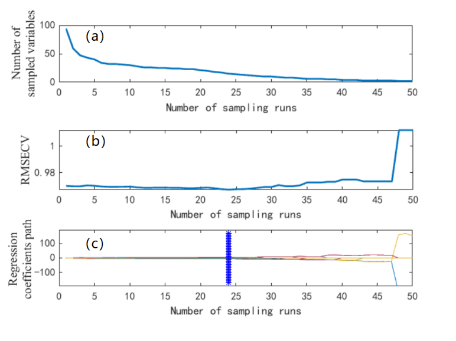
Figure 31.7 illustrates the feature band selection process using the CARS_SPA algorithm. After the feature bands were initially selected using the SPA algorithm, the number of variables reduced from 94 to 28. Due to the complexity of the SPA calculation process, and the possibility that some irrelevant wavelengths were selected, the CARS algorithm was applied for a secondary feature selection. This effectively removed wavelengths with lower weights, resulting in a more refined set of variables closely related to LAI. When the CARS algorithm was run for 15 iterations, the RMSECV reached its minimum value (RMSECV=0.9718), and 9 feature bands were selected, accounting for 9.57% of the total variables. These selected bands were: 466, 474, 518, 526, 610, 658, 710, 814, and 830 nm.
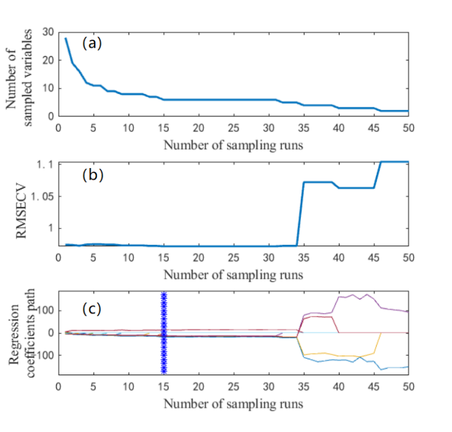
Figure 31.8 shows the distribution of LAI-related feature bands selected by the four different variable selection methods. While some feature bands overlapped, others varied depending on the selection algorithm used.
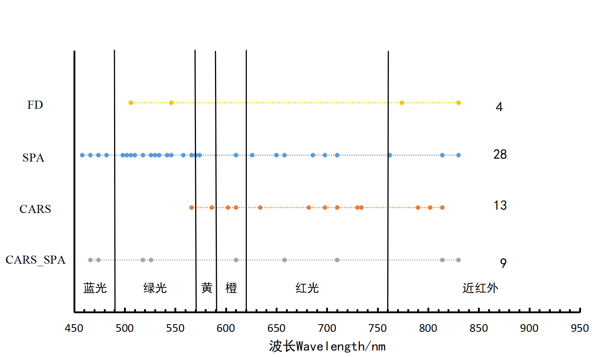
Based on the winter wheat LAI feature bands selected by different variable selection methods and full spectral information, three modeling methods were used to construct LAI estimation models, which were then validated using independent samples. The results are shown in Table 31.2. In the PLSR model, the model constructed using the 9 feature bands selected by CARS_SPA showed minimal difference between the training R² and the validation R², with both values being relatively close. Additionally, the RMSE and MAE values were low, indicating that the model was stable. The model performance for the training and validation datasets was as follows: R²=0.83, RMSE=0.73, and MAE=0.59 for the training set, and R²= 0.83, RMSE=0.74, and MAE=0.57 for the validation set. The model constructed using the 28 feature bands selected by SPA performed the worst, with R²=0.79, RMSE=0.81, and MAE=0.66 for the training set, and R²=0.78, RMSE=0.81, and MAE=0.61 for the validation set.
| Modelling method | Variable Extraction Selection Method | Selection Number of Wavelengths | Modelling Calibration | Validation | ||||
|---|---|---|---|---|---|---|---|---|
| R² | RMSE | MAE | R² RMSE | RMSE | MAE | |||
| PLSR | Full_band | Full_band | 0.79 | 0.81 | 0.81 | 0.81 0.66 | 0.79 | 0.58 |
| FD | 4 | 0.81 | 0.77 | 0.63 | 0.81 | 0.75 | 0.60 | |
| SPA | 28 | 0.79 | 0.81 | 0.66 | 0.78 | 0.81 | 0.61 | |
| CARS | 13 | 0.80 | 0.79 | 0.63 | 0.81 | 0.81 0.78 | 0.59 | |
| CARS_SPA | 9 | 0.83 0.73 | 0.83 0.73 | 0.73 0.59 | 0.83 | 0.74 | 0.57 | |
| SVR | Full_band | 0.83 0.74 0.57 SVR Full_band | 0.80 | 0.79 | 0.79 | 0.63 0.77 | 0.79 | 0.59 |
| FD | 4 | 0.80 | 0.78 | 0.59 | 0.80 | 0.72 | 0.57 | |
| SPA | 28 | 0.81 | 0.75 | 0.59 | 0.79 | 0.76 | 0.56 | |
| CARS | 13 | 0.79 | 0.79 | 0.63 | 0.77 | 0.79 | 0.61 | |
| CARS_SPA | 9 | 0.82 | 0.75 | 0.58 | 0.58 0.84 | 0.65 | 0.47 | |
| XGBoost | Full_band | 0.93 | 0.50 | 0.50 | 0.50 | 0.40 | 0.79 | 0.63 |
| FD | 4 | 0.88 | 0.65 | 0.53 | 0.81 | 0.75 | 0.66 | |
| SPA | 28 | 0.84 | 0.73 | 0.61 | 0.76 | 0.82 | 0.64 | |
| CARS | 13 | 0.82 | 0.82 | 0.66 | 0.82 | 0.84 | 0.64 | |
| CARS_SPA | 9 | 0.89 0.63 | 0.63 | 0.63 0.51 | 0.51 0.89 | 0.55 | 0.46 |
In the SVR models, the evaluation metrics of all models were similar. Among them, the model constructed using the 9 feature bands selected by CARS_SPA and SVR performed the best, with the following results: R²=0.82, RMSE=0.75, and MAE=0.58 for the training set, and R²=0.84, RMSE=0.65, and MAE=0.47 for the validation set.
In the analysis of the models built using the XGBoost method, the model constructed with the 28 feature bands selected by SPA performed the worst, with R²=0.84, RMSE=0.73, and MAE=0.61 for the training set, and R²=0.76, RMSE=0.82, and MAE=0.64 for the validation set. The best performance was observed with the model constructed using the 9 feature bands selected by CARS_SPA, with R²=0.89, RMSE=0.63, and MAE=0.51 for the training set, and R²=0.89, RMSE=0.55, and MAE=0.46 for the validation set.
After a comprehensive analysis of both the training and validation results, the model constructed using the 9 feature bands selected by CARS_SPA showed the best performance when combined with different modeling methods. This can be attributed to the fact that the 9 feature bands selected by CARS_SPA are evenly distributed across the spectral range of 458-830 nm, thus capturing spectral information that is highly relevant for LAI inversion. The next best results were achieved using the 4 feature bands selected by FD. Compared to the full spectral bands, the four LAI models built using the CARS_SPA selected feature bands outperformed the models constructed using the full spectral data. The performance of other models, built using different variable selection methods, varied in comparison with the full-spectrum models.
From the results above, it can be seen that by selecting feature variables, we can significantly reduce the number of variables used in modeling, lower the model complexity, and improve modeling efficiency while maintaining accuracy. Among the three machine learning methods, the XGBoost model performed the best, followed by PLSR and SVR. The best modeling and validation results are shown in Figure 31.9 and Figure 31.10.
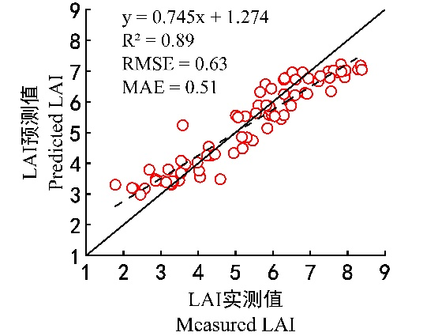
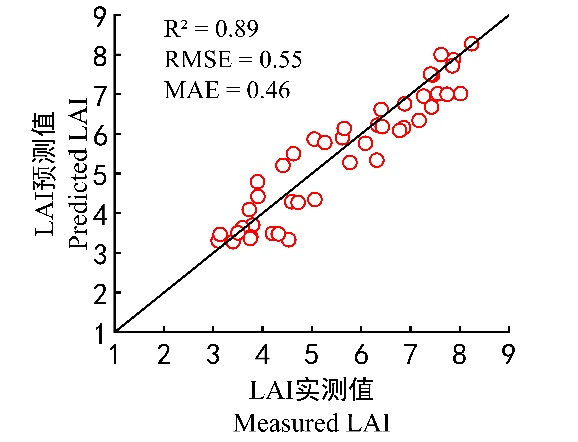
31.5 Conclusions
Based on different nitrogen treatments and field experiments, hyperspectral images and LAI at key growth stages of winter wheat were obtained by the UAV platform equipped with hyperspectral imaging sensor. Four algorithms were used to extract characteristic bands related to LAI, and three ML methods were used to construct models for estimating winter wheat LAI. We compared the reliability and accuracy of these models, and found out that the XGBoost model constructed based on 9 characteristic bands selected by CARS_SPA algorithm exhibited the highest accuracy. In this model, the R2, RMSE, and RPD of the calibration set were 0.89, 0.63, and 2.51, respectively, and those of the validation set were 0.89, 0.55, and 2.92, respectively. The combination of CARS_SPA algorithm and Xgboost modeling method can reduce input variables, improve the operation efficiency of the model, and ensure a higher accuracy. Our results provide a reference for the nondestructive and rapid acquisition of winter wheat LAI by UAV remote sensing.
31.7 Reference
[1]
T. Chen and C. Guestrin, “XGBoost: A Scalable Tree Boosting System,” in Proceedings of the 22nd ACM SIGKDD International Conference on Knowledge Discovery and Data Mining, 2016, pp. 785–794, doi: 10.1145/2939672.2939785.